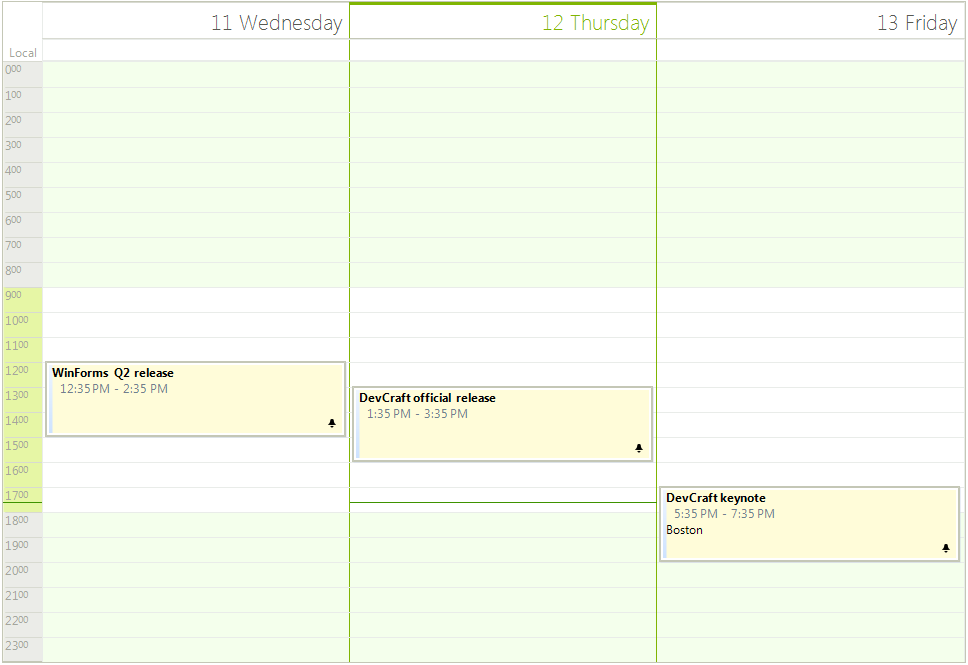

Scheduler Element Provider
Use SchedulerElementProvider Class to Change the Default RadSheduler Elements.
If you need to customize any of the RadSheduler elements you can use the SchedulerElementProvider
class. It allows you to replace the default elements with custom ones. This can be achieved by creating SchedulerElementProvider
descendant class and overriding the corresponding methods.
__[C#] __
public class MyElementProvider : SchedulerElementProvider
{
public MyElementProvider(RadScheduler scheduler)
: base(scheduler)
{
}
protected override T CreateElement<T>(SchedulerView view, object context)
{
if (typeof(T) == typeof(AppointmentElement))
{
return new MyAppointmentElement(this.Scheduler, view, (IEvent)context) as T;
}
if (typeof(T) == typeof(SchedulerCellElement))
{
return new MySchedulerCellElement(this.Scheduler, view) as T;
}
return base.CreateElement<T>(view, context);
}
public override RulerPrimitive CreateRulerPrimitive(DayViewAppointmentsArea area, SchedulerTimeZone timeZone)
{
return new MyRulerPrimitive(this.Scheduler, area);
}
}
__[VB.NET] __
Public Class MyElementProvider
Inherits SchedulerElementProvider
Public Sub New(scheduler As RadScheduler)
MyBase.New(scheduler)
End Sub
Protected Overrides Function CreateElement(Of T As SchedulerVisualElement)(view As SchedulerView, context As Object) As T
If GetType(T) = GetType(AppointmentElement) Then
Return TryCast(New MyAppointmentElement(Me.Scheduler, view, DirectCast(context, IEvent)), T)
End If
If GetType(T) = GetType(SchedulerCellElement) Then
Return TryCast(New MySchedulerCellElement(Me.Scheduler, view), T)
End If
Return MyBase.CreateElement(Of T)(view, context)
End Function
Public Overrides Function CreateRulerPrimitive(area As DayViewAppointmentsArea, timeZone As SchedulerTimeZone) As RulerPrimitive
Return New MyRulerPrimitive(Me.Scheduler, area)
End Function
End Class
Your custom elements should be ancestors of the default ones. For example, you can create custom elements and override some of their default properties as follows.
__[C#] __
public class MySchedulerCellElement : SchedulerCellElement
{
public MySchedulerCellElement(RadScheduler scheduler, SchedulerView view)
: base(scheduler, view)
{
}
protected override void InitializeFields()
{
base.InitializeFields();
this.BorderWidth = 2;
this.BackColor = ColorTranslator.FromHtml("#f5e020");
this.Text = "Text";
}
}
public class MyAppointmentElement : AppointmentElement
{
public MyAppointmentElement(RadScheduler scheduler, SchedulerView view, IEvent appointment)
: base(scheduler, view, appointment)
{
}
protected override void InitializeAppointment()
{
base.InitializeAppointment();
this.BackColor = ColorTranslator.FromHtml("#91c930");
this.BackColor2 = ColorTranslator.FromHtml("#51ab2e");
this.SelectedBorderColor = ColorTranslator.FromHtml("#005Bbc");
}
}
public class MyRulerPrimitive : RulerPrimitive
{
public MyRulerPrimitive(RadScheduler scheduler, DayViewAppointmentsArea area)
: base(scheduler, area)
{
this.BackColor = ColorTranslator.FromHtml("#91c930");
this.Font = new Font("Segoe Script", 12, FontStyle.Underline);
this.ForeColor = ColorTranslator.FromHtml("#bb2525");
}
}
__[VB.NET] __
Public Class MySchedulerCellElement
Inherits SchedulerCellElement
Public Sub New(scheduler As RadScheduler, view As SchedulerView)
MyBase.New(scheduler, view)
End Sub
Protected Overrides Sub InitializeFields()
MyBase.InitializeFields()
Me.BorderWidth = 2
Me.BackColor = ColorTranslator.FromHtml("#f5e020")
Me.Text = "Text"
End Sub
End Class
Public Class MyAppointmentElement
Inherits AppointmentElement
Public Sub New(scheduler As RadScheduler, view As SchedulerView, appointment As IEvent)
MyBase.New(scheduler, view, appointment)
End Sub
Protected Overrides Sub InitializeAppointment()
MyBase.InitializeAppointment()
Me.BackColor = ColorTranslator.FromHtml("#91c930")
Me.BackColor2 = ColorTranslator.FromHtml("#51ab2e")
Me.SelectedBorderColor = ColorTranslator.FromHtml("#005Bbc")
End Sub
End Class
Public Class MyRulerPrimitive
Inherits RulerPrimitive
Public Sub New(scheduler As RadScheduler, area As DayViewAppointmentsArea)
MyBase.New(scheduler, area)
Me.BackColor = ColorTranslator.FromHtml("#91c930")
Me.Font = New Font("Segoe Script", 12, FontStyle.Underline)
Me.ForeColor = ColorTranslator.FromHtml("#bb2525")
End Sub
End Class
The following elements can be changed in the CreateElement method.
| Element |
| AppointmentElement |
| DayViewAllDayHeader |
| DayViewAppointmentsArea |
| DayViewAppointmentsTable |
| DayViewHeader |
| DragFeedbackElement |
| MonthCellElement |
| MonthViewAreaElement |
| MonthViewHeader |
| MonthViewVerticalHeader |
| SchedulerCellElement |
| SchedulerDayViewElement |
| SchedulerDayViewGroupedByResourceElement |
| SchedulerHeaderCellElement |
| SchedulerMonthViewElement |
| SchedulerMonthViewGroupedByResourceElement |
| SchedulerMultiDayViewElement |
| SchedulerResourceHeaderCellElement |
| SchedulerTimelineViewElement |
| TimelineAppointmentsPresenter |
| TimelineGroupingByResourcesElement |
| TimelineHeader |
| ViewNavigationElement |